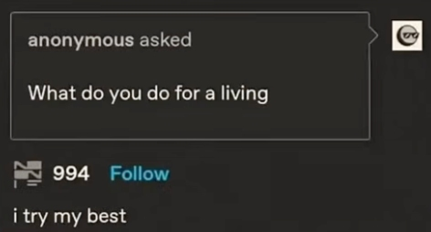
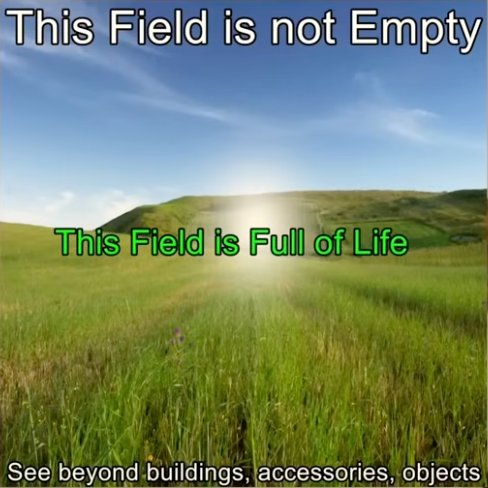
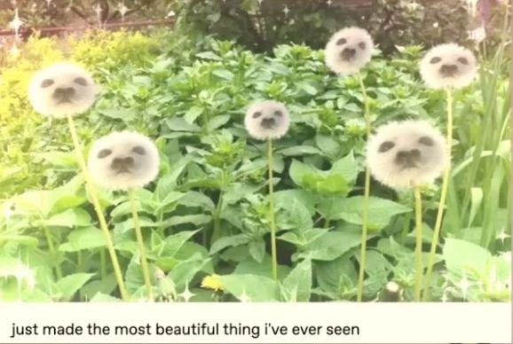
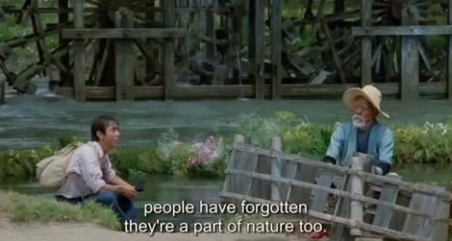
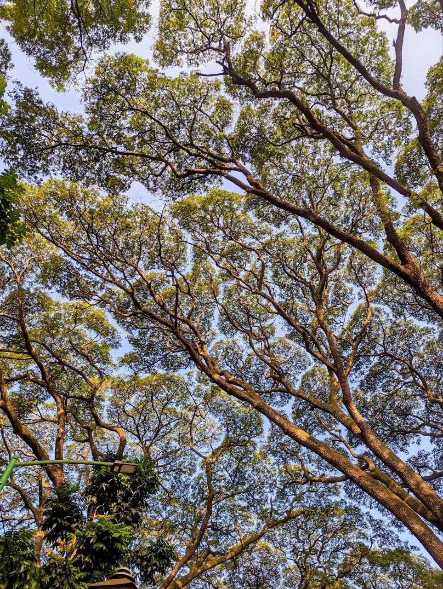
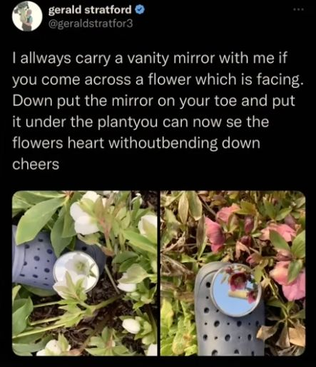
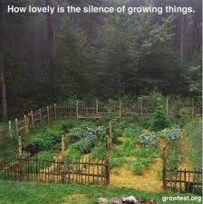
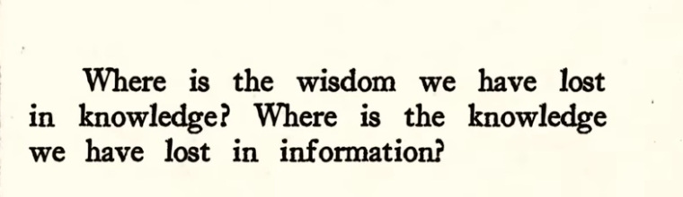
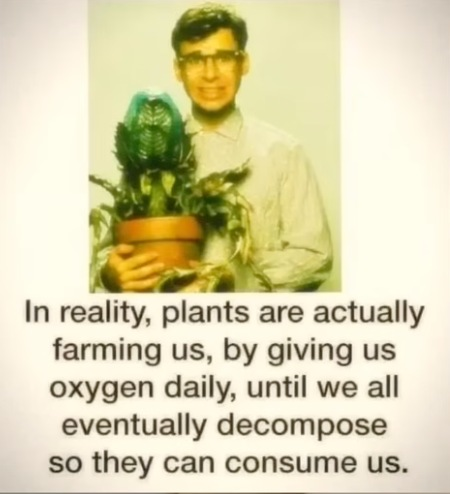

🍃 The World Is Re-Enchanted When We Pay Attention To Trees 🌳
Um I want to talk about consciousness 💭
I want to talk about natural intelligence 🌱 versus artificial intelligence 🤖
I want to talk about bridging the gaps between the language of art 🎨 and the language of science 🧪


how in certain indigenous languages there are way more verbs 🏃♂️ than nouns 🗿. And this is because they look at the world as animate ✨. So they wouldn't look at a tree, for example, and call the tree it. This might not be entirely grammatically correct, but from memory,
it's the difference between saying, "Look, it's a tree."
And saying, "Look, they're being a tree." 🌳🙌
anthropomorphism: attribution of human form, character, or attributes to non-human entities.
considered to be an innate tendency of human psychology.
🧒 The Childhood Lens
And I got a couple of comments
from people saying that this is something that they used to do naturally as a child 🐣. They remember looking at the world as being alive 🌟 and effectively anthropomorphizing things that we traditionally look at as inanimate. 🧸
this essay called the conscious universe by Joe Zeta where he says,
"The notion of a world awake might seem unintuitive to most of us,
but it is something we adopt naturally in childhood."
In 1929, the Swiss psychologist John Pagette found that children between 2 and 4 years old are inclined to attribute consciousness to everything around them 🌎.
A child can happily talk to a grasshopper and blame the pavement if they trip up. It isn't such an alien thought at that age to think a flower 🌻 might feel the sunlight and perhaps even enjoy it ☀️. Fairy tales and children's media are infused with animate worlds in which trees, animals, and objects come to the aid or annoyance of a protagonist.

And I've been reading this book, The Light Eaters, where the author actually said at one point, zoologists have found that elephants can recognize themselves in the mirror, crows make tools, and cats exhibit the same attachment styles as human toddlers. And I don't know about you, but when I hear things like that, there's like a different level of kinship 🤝 that I feel with those creatures.
"How do I cope with how unnatural the world is and still build something meaningful for myself? I have so much life and energy and creativity, but everywhere I look, I get sad. Capitalism is unnatural. Patriarchy is unnatural. Even English feels unnatural. But, there's very little I can do to change anything,
and I can't believe I have to spend my one life on Earth buying things and budgeting, etc.
It feels unnatural to live like this."

The natural world has figured something out when it comes to reciprocity 🔄
and it's paved the way for our existence.
I say that literally, not metaphorically. Like if we measured it, plants would amount to, I believe it's something like 80% (this percentage is measured by mass and not by number of species or individuals) of Earth's living matter. We need to remind yourself that we are not alone here. The systems we as human beings have built, the stories we've told are not the only systems and stories to learn from.
On substack, a couple of months ago, I saw this post that was talking about crown shyness 👑. Crown shyness is a unique behavior of certain trees where they avoid overlapping their canopies to maximize group access to resources.


Zoe Schlanger, who is a journalist that covers climate change, and she was talking about how covering climate change was making her feel very hopeless. She found herself really fascinated with this debate around plant intelligence. So, this was just a rabbit hole for her that became so all-consuming that she decided to go out and talk to as many experts as she can, and actually in some cases participate in field research where questions were being asked like, "Can plants see? Do plants recognize their own family members? Do plants feel pain?"
She's the author of the book, "Light Eaters".
She says,
Plants are the very definition of creative becoming.
They are in constant motion, albeit slow motion,
probing the air and soil in a relentless quest for a livable future.
A life spent constantly growing yet rooted in a single spot comes with tremendous challenges.
To meet them. Plants have come up with some of the most creative methods for surviving of any living thing, us included.

Light Eaters 💡
Plants can hear 👂. We found a potential hearing organ, which is the flower itself.
Strawberries can produce fruit using their own pollen. So, this means they're self fertile. They can reproduce basically by having sex with themselves.
Some plants can tell time ⏳ and have memory 🧠. Plants don't have these structures obviously but look at what they do. I mean they take information from the outside world. They process. They make decisions and they perform. They take everything into account and they transform it into a reaction. And this to me is the basic definition of intelligence.
There are vines that are basically shape shifters. The vine is called the 🦎 Boquila and it's often referred to as the chameleon vine because as a survival mechanism, they change their appearance based on the other plants that are around them. So that has scientists wondering how can they do that unless they can see 👀. So, there's a debate going on right now about whether plants can actually see or whether this is because of microorganisms that are jumping from the host plant to the chameleon vine.
She further says, "To many I spoke to, intelligence felt dangerous, yes, but only because most people make a mental leap directly to human intelligence. Measuring plants against human cognition made no sense. It just rendered plants as lesser humans, lesser animals. Anthropomorphizing was dangerous because it diminished these green bodies, leaving no room for recognition that plants deploy several senses, or could one say intelligences, that far exceed anything humans can do in a similar category."

What is consciousness ❓❓
Consciousness actually does not have a widely agreed-upon concrete definition within science. Thomas Nagel has a definition of consciousness that a lot of people abide by, and it says,
"A being is conscious just if there is something that it is like to be that creature,
i.e., some subjective way the world seems or appears from the creature's mental or experiential point of view."
The problem with consciousness is that you can't infer an experience on another being's behalf. The Traditional View: 🧱 Matter is unconscious → Complex brain → Magic happens ✨ → Consciousness. The Panpsychist View: 🌌 Matter has tiny bits of consciousness → Complex brain → Large-scale consciousness 💡.
I read this essay called Silicon Valley's obsession with AI looks a lot like religion. It highlights the emergence of 'AI Religions' 🤖🕯️ — modern movements that treat algorithmic power as a new form of digital divinity.
When people spent the majority of their time outside, they were worshipping the sun.
Now a lot of people that spend all day looking at a computer are starting to worship their computer.
Animism
Animism 🏔️ describes practices that establish a relationship between places and people 🤝.
Animism is often looked at by anthropologists as like the first stage in the evolution of religion. Religion is often looked at as going from animism to polytheism to monotheism. I read this essay called Animism recognizes how animals, places, and plants have power over humans and it's finding renewed interest around the world. And it's talking about how many environmental activists actually equate a good amount of harm to dominion theology, which positions humans as above creation. This idea that we are so much better than the plants and the animals and the rocks and the whatever because we're able to build skyscrapers and think philosophically, which allows for us to see the living world as nothing more than a collection of resources versus a web of relationships.

And this essay says, "What is important to understand about animism is not that it is a religion per se, nor is it a matter of merely believing that a mountain or a glacier has a soul. Animism describes practices that establish a relationship between places and people, usually one that recognizes places, animals, and plants have power over people". I can experience the earth as animant. Whether the earth is experiencing me back, you know, like I don't know.